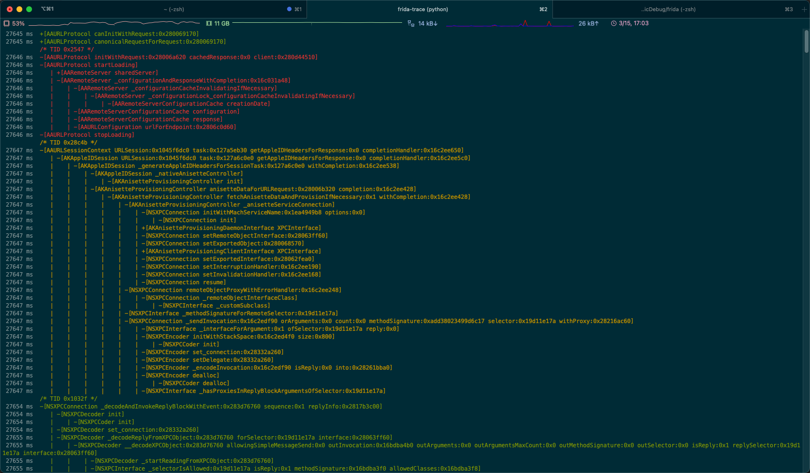
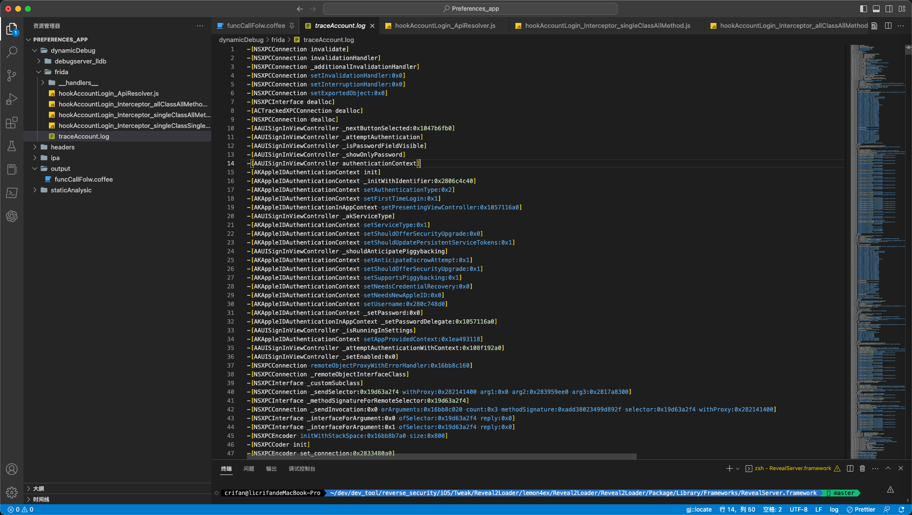
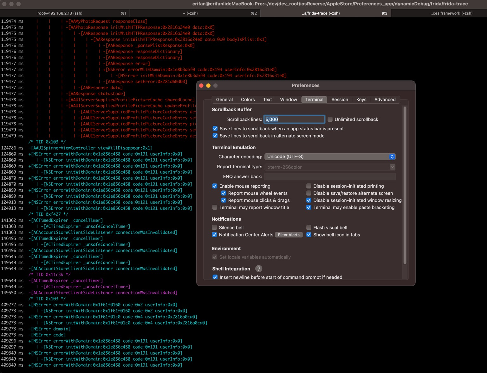
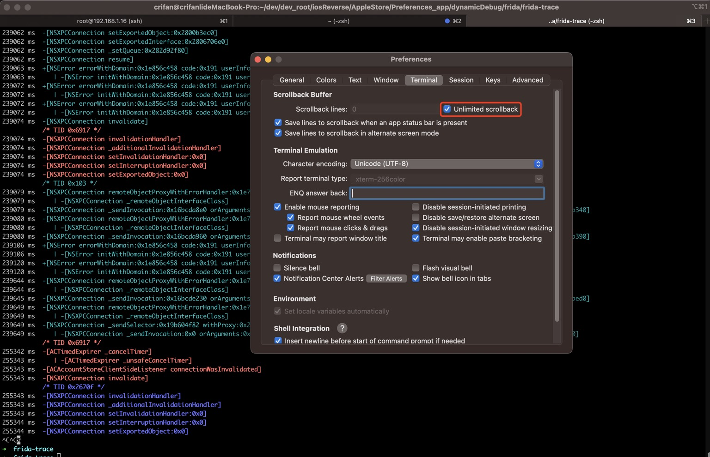
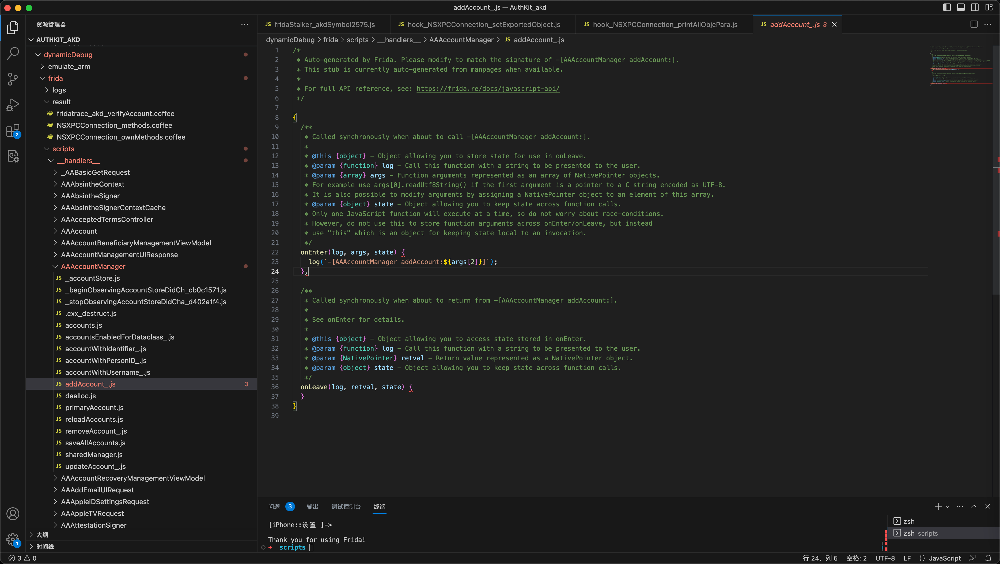

frida-trace
hook指定的多个二进制库文件
想要去用frida-trace追踪的iOS的ObjC的库=Framework=二进制：
- AppleAccount
- AppleAccountUI
- Accounts
- AccountsDaemon
- AuthKitUI
- AuthKit
- UserManagement
最后是用：
- 去include 多个 module
frida-trace -U -F com.apple.Preferences -I "AppleAccount*" -I "UserManagement" -I "Accounts*" -I "AuthKit*"
可以运行，但是结果：
- 只找到少数几个函数，不是我们要的
- -》这么多库，一共才有107个函数
- -》其中AppleAccount只有7个函数，其中就有上面的_AALogSystem仅仅是日志的函数，而不是我们要的：很多其他账号登录相关的函数
- -》正常情况下，应该会有非常多的函数才对
注：
也可以换另外写法：
frida-trace -U -F com.apple.Preferences -i "AppleAccount\!" -i "AppleAccountUI\!" -i "Accounts\!" -i "AccountsDaemon\!" -i "AuthKit\!" -i "AuthKitUI\!" -i "UserManagement\!"
不过结果都一样：hook的函数都很少，不是我们想要的。
输出日志到文件中
- 解决办法：加上
-o参数，去指定输出log到文件- 命令
frida-trace -U -F com.apple.Preferences -o traceAccount.log -m "*[AA* *]" -m "*[AK* *]" -m "*[AS* *]" -m "*[NSXPC* *]" -M "-[ASDBundle copyWithZone:]" -M "-[ASDInstallationEvent copyWithZone:]" -M "-[NSXPCEncoder _encodeArrayOfObjects:forKey:]" -M "-[NSXPCEncoder _encodeUnkeyedObject:]" -M "-[NSXPCEncoder _replaceObject:]" -M "-[NSXPCEncoder _checkObject:]" -M "-[NSXPCEncoder _encodeObject:]" -M "-[NSXPCConnection replacementObjectForEncoder:object:]" - 缺点
- 之前=输出日志到终端：带颜色和缩进 -> 利于查看函数调用关系
- 
- 现在=输出日志到文件：丢失了颜色，更主要是缩进也丢失了 -> 非常不利于查看函数调用关系
- 
- 之前=输出日志到终端：带颜色和缩进 -> 利于查看函数调用关系
- 命令
想要保留所有的frida-trace的带缩进的日志
如上所述，想要：保留所有的frida-trace的日志，但如果用输出到日志文件，却又丢失缩进（和颜色）
另外有个规避办法：
修改当前终端的最大显示行数 -> 就可以避免输出日志行数太多，之前内容被冲掉，看不到的问题了
比如：
Mac中iTerm2中，右键当前tab页顶部-》右键-》Edit Session->Terminal->Scrollback Buffer->Scrollback line：改为足够大的数值，比如5000- 
甚至如果log日志特别长，那么可以考虑：设置为无限行数都保留 == Unlimited scrollback

这样就完全不用担心日志行数太多，前面的日志被冲掉，看不到的问题了。
通过修改特定函数的hook的js去打印参数值
对于之前的需求：frida-trace时，打印其中特定的某个ObjC函数的参数
之前不知道如何解决，后来参考这里，突然想到：
倒是可以借助其所说的，对于frida-trace自动为每个类的函数，所生成的js文件：
- 位置：
__handlers__/{ClassName}/{FunctionName}.js
去修改js代码，加上打印对应的args的代码，即可打印对应参数值了。
举例
-[AAAccountManager addAccount:]
frida-trace为函数-[AAAccountManager addAccount:]自动生成的：
- js文件
/Users/crifan/dev/dev_root/iosReverse/AppleStore/AuthKit_akd/dynamicDebug/frida/scripts/__handlers__/AAAccountManager/addAccount_.js- 
完整js代码
/* * Auto-generated by Frida. Please modify to match the signature of -[AAAccountManager addAccount:]. * This stub is currently auto-generated from manpages when available. * * For full API reference, see: https://frida.re/docs/javascript-api/ */ { /** * Called synchronously when about to call -[AAAccountManager addAccount:]. * * @this {object} - Object allowing you to store state for use in onLeave. * @param {function} log - Call this function with a string to be presented to the user. * @param {array} args - Function arguments represented as an array of NativePointer objects. * For example use args[0].readUtf8String() if the first argument is a pointer to a C string encoded as UTF-8. * It is also possible to modify arguments by assigning a NativePointer object to an element of this array. * @param {object} state - Object allowing you to keep state across function calls. * Only one JavaScript function will execute at a time, so do not worry about race-conditions. * However, do not use this to store function arguments across onEnter/onLeave, but instead * use "this" which is an object for keeping state local to an invocation. */ onEnter(log, args, state) { log(`-[AAAccountManager addAccount:${args[2]}]`); }, /** * Called synchronously when about to return from -[AAAccountManager addAccount:]. * * See onEnter for details. * * @this {object} - Object allowing you to access state stored in onEnter. * @param {function} log - Call this function with a string to be presented to the user. * @param {NativePointer} retval - Return value represented as a NativePointer object. * @param {object} state - Object allowing you to keep state across function calls. */ onLeave(log, retval, state) { } }
可以拷贝把其中的：
log(`-[AAAccountManager addAccount:${args[2]}]`);
改为：
log(`-[AAAccountManager addAccount:${new ObjC.Object(args[2])}]`);
应该就可以：打印出ObjC对象的信息了，而不仅仅是：ptr=NativePointer的指针的字符串而已。